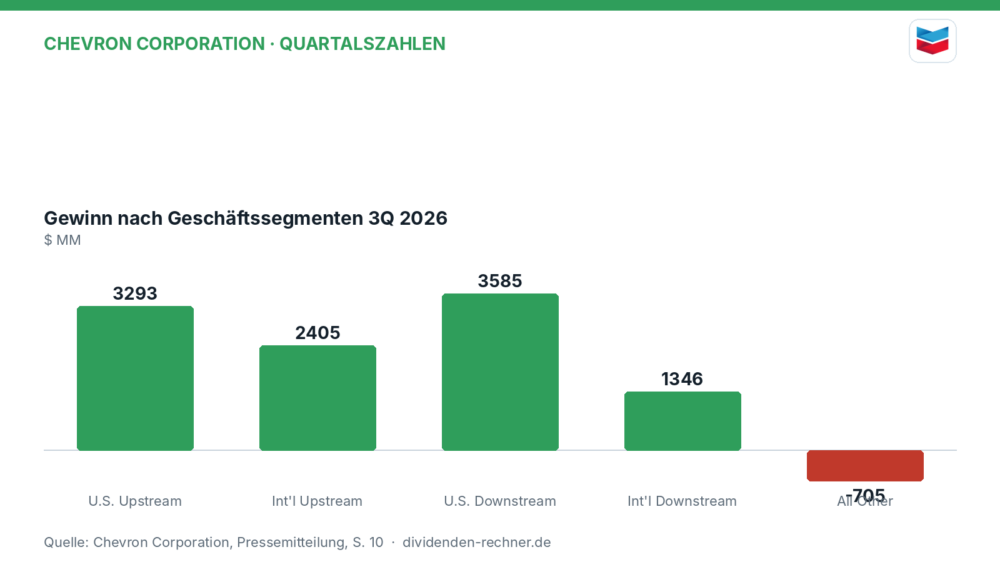
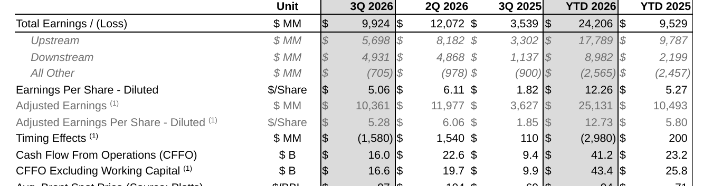
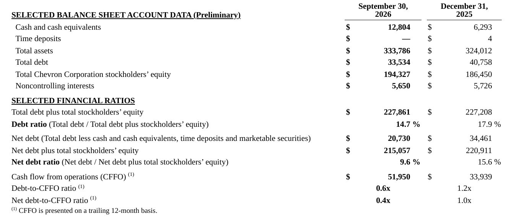

Quartalszahlen

Chevron meldet 9,9 Milliarden Dollar Gewinn im dritten Quartal
Chevron verzeichnet im dritten Quartal 2026 einen Nettogewinn von 9,92 Mrd. USD. Umsatz und Cashflow steigen gegenüber dem Vorjahr deutlich an.
Kurz gesagt
Umsatz: 65,24 Mrd. USD (+35,4 %)
Gewinn: 9,92 Mrd. USD (+180,4 %)
- Ergebnisprung: Höhere Margen im Raffineriegeschäft und bessere Rohölpreise treiben den Nettogewinn massiv nach oben.
- Kapitalverwendung: Der Konzern zahlt eine Quartalsdividende von 1,78 USD je Aktie, baut Schulden ab und nutzt den Cashflow für Aktienrückkäufe.
- Risiko: Unwägbarkeiten durch den Konflikt im Nahen Osten und rückläufige Förderstrukturen belasten die internationale Ölproduktion.
Chevron steigert Gewinn im dritten Quartal kräftig
Chevron hat im dritten Quartal 2026 von besseren Margen im Raffineriegeschäft und gestiegenen Rohölpreisen profitiert. Der Nettogewinn kletterte von 3,54 Mrd. USD im Vorjahreszeitraum auf 9,92 Mrd. USD. Die Umsatzerlöse aus Lieferungen und Leistungen stiegen von 48,17 Mrd. USD auf 65,24 Mrd. USD. Bereinigt um Sondereffekte lag das Ergebnis bei 10,36 Mrd. USD.

Eigene Darstellung nach Daten aus: Chevron Corporation, Quartalszahlen vom 2026-10-30 · Original.
Earnings & Cash Flow Summary. Quelle: Chevron Corporation, Quartalszahlen vom 2026-10-30 · Original. Ausschnitt nur zugeschnitten, sonst unverändert.Starkes Raffineriegeschäft und Upstream-Erfolge
Das US-Upstream-Segment trug mit einem Gewinn von 3,29 Mrd. USD zum Konzernergebnis bei, während das internationale Upstream 2,41 Mrd. USD beisteuerte. Im Downstream-Bereich verzeichneten die USA ein Ergebnis von 3,59 Mrd. USD und das internationale Geschäft 1,35 Mrd. USD. Der Bereich All Other wies Nettoverlustkosten von 705 Mio. USD aus. Konzernchef Mike Wirth verwies auf Rekorderfolge in US-Raffinerien und eine stabile operative Ausrichtung.
„Wir haben eine starke operative Leistung und disziplinierte Umsetzung gezeigt und investieren weiter in die Ausweitung unseres Energieangebots.“
— Mike Wirth, Chairman und Chief Executive Officer (aus dem Englischen übersetzt)
Dividende und solider Cashflow
Das Board of Directors hat eine Quartalsdividende von 1,78 USD je Aktie beschlossen, die am 10. Dezember 2026 ausgezahlt wird. Der operative Cashflow (CFFO) belief sich im dritten Quartal auf 16,01 Mrd. USD, nach 9,39 Mrd. USD im Vorjahreszeitraum. Der Free Cash Flow erreichte 12,00 Mrd. USD. Für den Erwerb eigener Aktien wendete das Unternehmen im Quartal 2,50 Mrd. USD an.
Schuldenabbau und Bilanzstruktur
Die Gesamtverschuldung des Konzerns ging im Laufe des Quartals zurück. Die Gesamtverschuldung (Total Debt) belief sich zum Stichtag 30. September 2026 auf 33,53 Mrd. USD (gegenüber 40,76 Mrd. USD zum Jahresende 2025). Die Nettoverschuldung sank auf 20,73 Mrd. USD. Das Verhältnis von Schulden zu CFFO (Debt-to-CFFO) lag bei 0,6x. Die Investitionen (Capex) beliefen sich im abgelaufenen Quartal auf 4,01 Mrd. USD.

Ausgewählte Bilanzdaten und Finanzkennzahlen. Quelle: Chevron Corporation, Quartalszahlen vom 2026-10-30 · Original. Ausschnitt nur zugeschnitten, sonst unverändert.Bewertung und Marktumfeld
Mit einem durchschnittlichen Brent-Rohölpreis von 97 USD je Barrel im dritten Quartal (gegenüber 69 USD im Vorjahr) bewegte sich das Marktumfeld auf einem höheren Niveau als im Vorjahreszeitraum. Belastend wirkten sich unter anderem negative timing-Effekte durch steigende Preise, Rechtsrückstellungen von 160 Mio. USD und Wertminderungen aus.
Ausblick und offene Punkte
Chevron plant umfangreiche Investitionen in Venezuela und den Ausbau der Förderung, um auf global angespannte Märkte zu reagieren. Gleichzeitig bleiben Risiken durch geopolitische Konflikte, mögliche Produktionsquoten der OPEC und schwankende Ölpreise bestehen, die die künftige Ergebnisentwicklung beeinflussen können.
Quelle: Chevron Corporation, Quartalszahlen vom 2026-10-30. Rechenwege eigene Berechnung. Keine Anlageberatung.
Hinweis: Dieser Text dient der allgemeinen Information und ist weder Anlage-, Steuer- noch Rechtsberatung. Kapitalanlagen sind mit Risiken verbunden, bis hin zum Totalverlust.